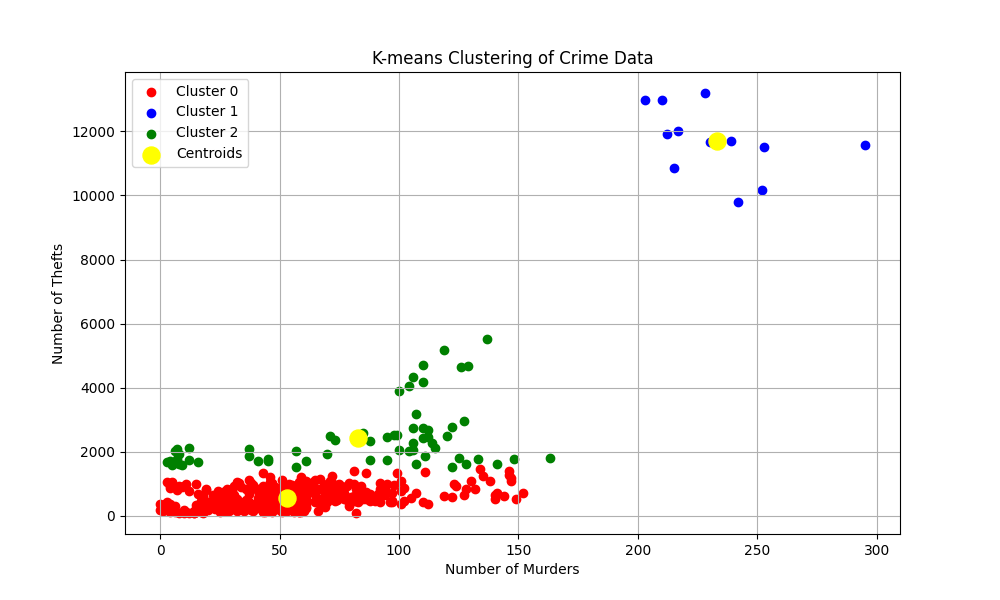

🔍 Features
- Upload crime datasets in CSV format
- Perform K-Means clustering on crime attributes
- Visualize clusters with backend-generated charts and maps
- Filter crime data by city, district, and year
- Responsive, user-friendly UI built with Flask and HTML
🛠️ Tech Stack
Backend:
- Python 3.x
- Flask for routing and serving content
- Pandas for data preprocessing
- Scikit-learn for clustering (K-Means)
Frontend:
- HTML/CSS for layout and styling
Visualization:
- Matplotlib & Seaborn for visualizing clusters and trends
Dev Tools:
- VSCode — development environment
- Git & GitHub — version control & hosting
📊 Results
This app helps stakeholders identify crime-prone zones and allocate resources more efficiently based on data-driven insights.


Here red cluster indicates low crime rate, green cluster indicates a moderate crime rate, and the blue cluster indicates a high crime rate. Hence from the clustering analysis, we can easily identify the cities having a high risk of criminal activities and take necessary action.
Cluster Summary
| Cluster | Average Murders | Average Thefts | City Count |
|---|---|---|---|
| Cluster 0 | 53.21 | 567.66 | 465.0 |
| Cluster 1 | 233.0 | 11691.75 | 12 |
| Cluster 2 | 83.0 | 2421.33 | 63.0 |